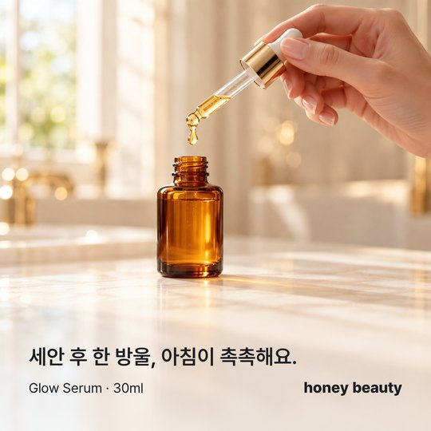
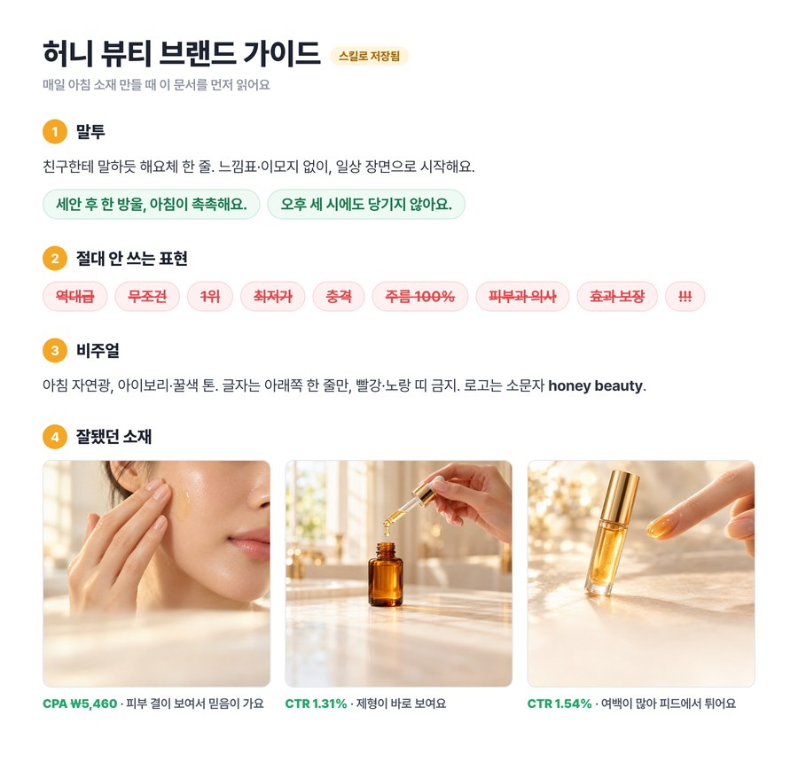
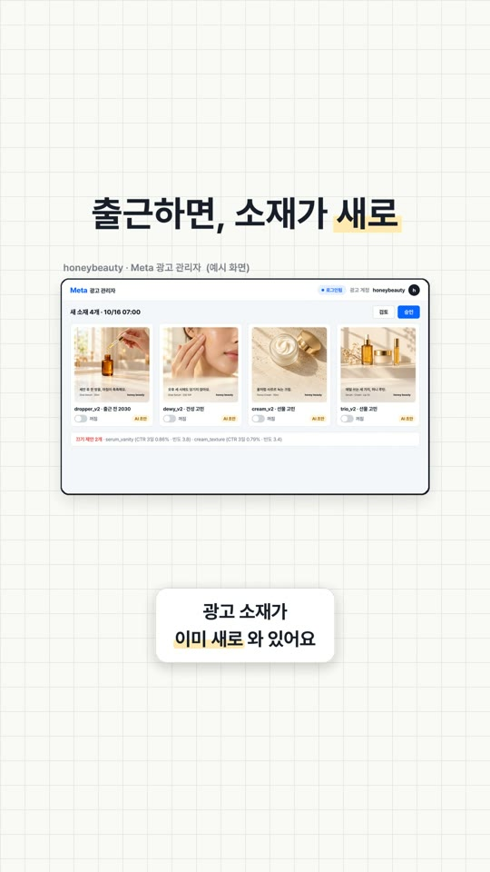
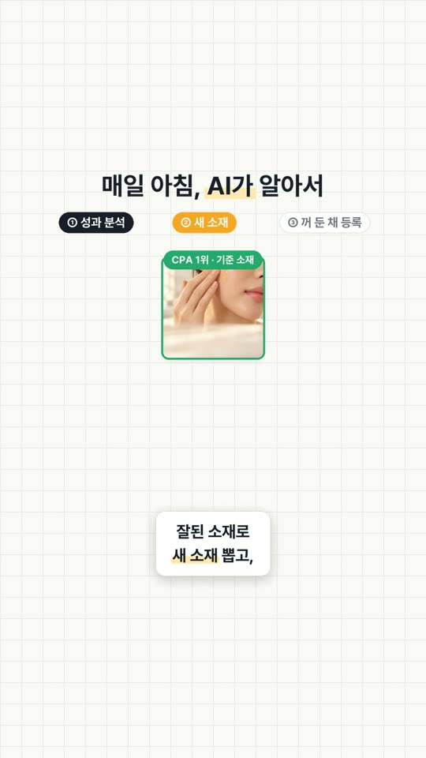
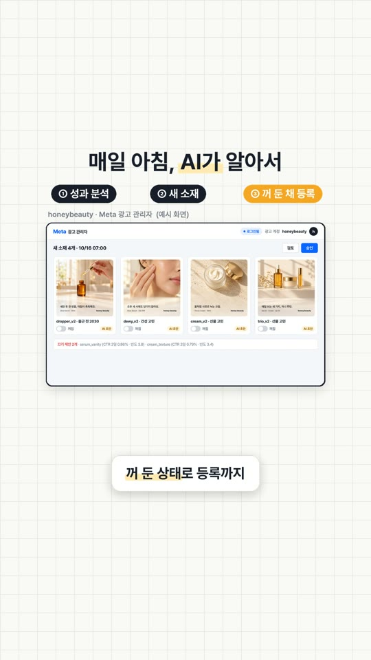
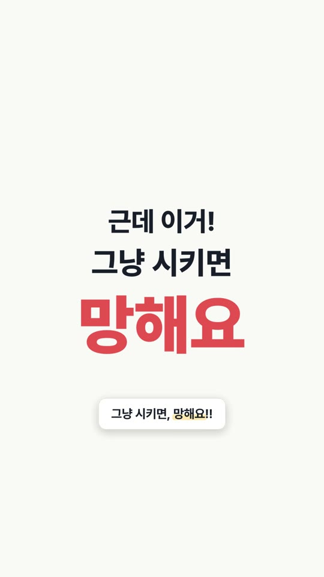
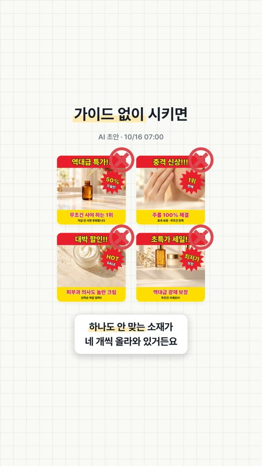
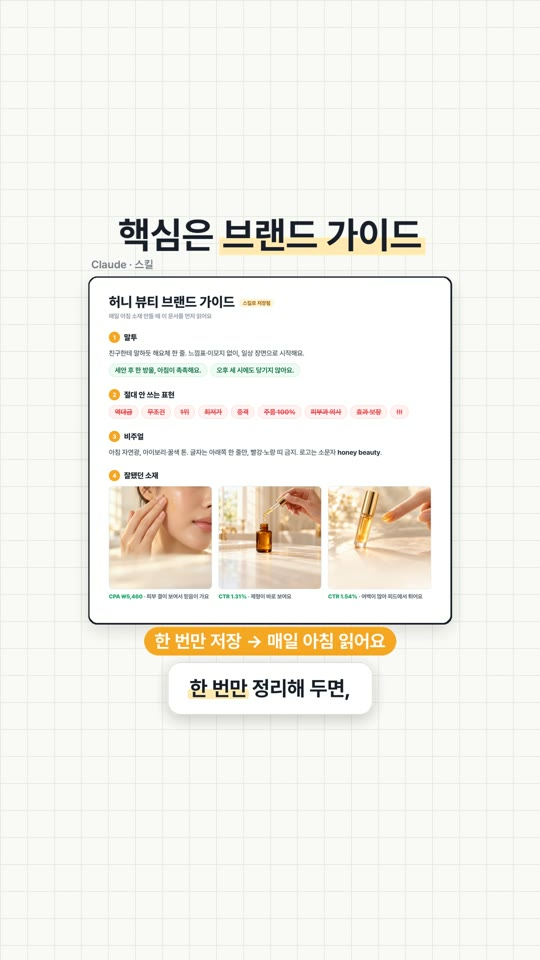
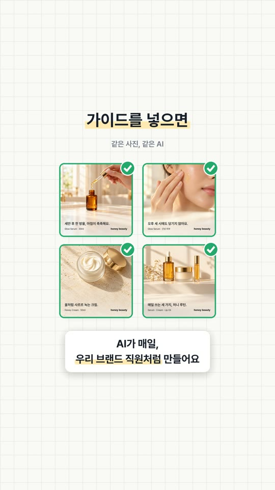
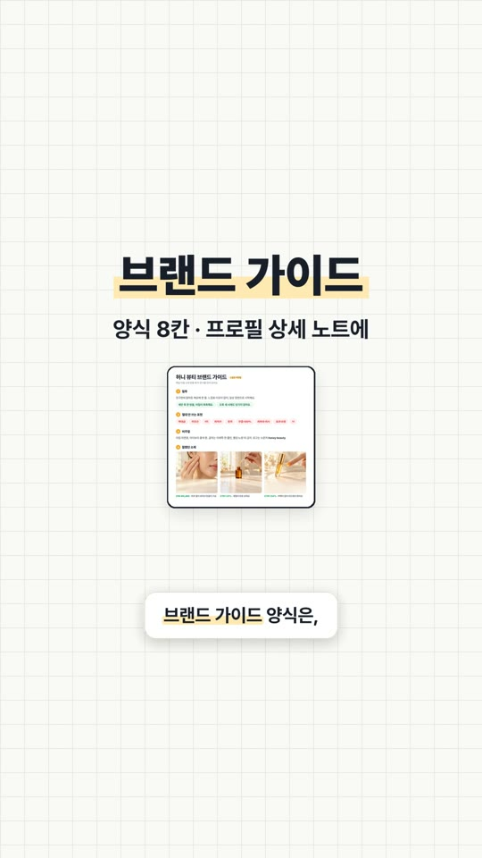

출근하면 새 소재가 와 있는 에이전트, 만들 수 있어요. 근데 그냥 시키면 '역대급 특가!!' 같은 소재가 매일 네 개씩 올라와요. 영상에서 말한 브랜드 가이드 양식과 에이전트 지시문을 여기 그대로 모아 뒀어요.
같은 사진, 같은 AI예요. 다른 건 '우리 브랜드가 어떻게 말하는지'를 알려 줬느냐 하나예요.

가이드 넣고 · 우리 말투 한 줄아래 8칸을 채워서 클로드에 스킬로 저장해 두세요. 한 번만 정리해 두면 매일 아침 이 문서를 먼저 읽고 소재를 만들어요.
[브랜드 가이드] ___ 브랜드 1. 한 줄 소개: 우리는 ___한 사람에게 ___을 해 주는 브랜드 2. 타겟: 누가, 어떤 상황에서, 뭘 제일 답답해하는지 3. 말투: 예) 해요체 · 이모지 1개까지 · 느낌표 남발 금지 4. 꼭 쓰는 말 / 절대 안 쓰는 말: 예) '역대급' '무조건' '1위' 금지 5. 비주얼: 메인 컬러, 피하는 색, 사진 톤(밝게 / 자연광 등), 로고 위치 6. 잘된 소재 3개: 이미지 + 문구 + 왜 잘됐는지 한 줄 7. 망한 소재 2개: 왜 안 됐는지 한 줄 8. 심사 주의: 효과 보장 · 전후 비교 등 매체에서 반려되는 표현
💡 제일 중요한 건 6·7번이에요. 말로 설명하는 것보다 잘된 소재·망한 소재 예시 몇 개가 AI한테 훨씬 잘 먹혀요.
아래 브랜드 가이드를 '[브랜드명] 브랜드 가이드' 스킬로 저장해 줘. 앞으로 광고 소재 문구나 이미지를 만들 때는 항상 이 스킬을 먼저 읽고 따라 줘. 가이드에 안 맞는 표현이 나오면 스스로 고친 다음 보여 줘. (여기에 채운 브랜드 가이드를 붙여 넣기)
💡 잘된 소재·망한 소재 이미지도 같이 첨부하세요. 글보다 이미지 예시가 비주얼 톤을 더 정확하게 잡아요.
영상 속 예시 · 허니 뷰티 브랜드 가이드

매일 아침 7시에 아래 순서로 해 줘. 1. 메타 광고 계정 [계정명]에서 최근 7일 소재별 노출, CTR, 빈도, CPA를 가져와. 2. 최근 3일 CTR이 7일 평균보다 20% 이상 낮고 빈도가 3 이상인 소재를 '지친 소재'로 골라. 3. 7일 CPA가 가장 낮은 소재를 기준으로, 소구점은 그대로 두고 첫 문장과 이미지 구도를 바꾼 새 소재 4개를 만들어. [브랜드 가이드] 스킬을 꼭 따라. 4. 새 소재는 같은 광고 세트에 '꺼짐' 상태로 등록해. 아무것도 켜거나 끄지 마. 5. 끌 소재, 새 소재, 고른 이유를 한 장으로 요약해서 보내 줘.
💡 '지친 소재' 기준은 숫자로 박아 두세요. 안 정하면 AI가 날마다 다른 기준으로 골라요. 숫자는 우리 계정에 맞게 바꾸면 돼요.
광고 관리자는 메타 공식 커넥터로 연결하거나, 연결이 없는 매체는 EP.02의 ego lite로 로그인된 화면을 그대로 써요.








영상 속 '허니 뷰티'는 설명을 위한 가상 브랜드이고, 제품 사진은 AI로 만든 예시예요. 광고 관리 화면과 숫자도 예시예요.
대행사에서 AI 교육하는 현직 마케터가 직접 써 보고 정리해요.
인스타에서 팔로우